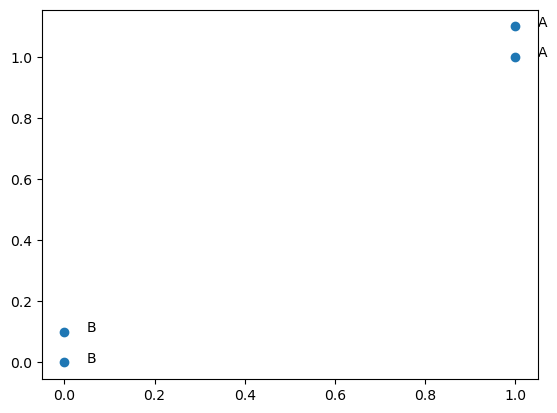

K Nearest Simple example#
from numpy import *
import operator
group = array([[1.0,1.1],[1.0,1.0],[0,0],[0,0.1]])
labels = ['A','A','B','B']
print (group)
print (labels)
[[1. 1.1]
[1. 1. ]
[0. 0. ]
[0. 0.1]]
['A', 'A', 'B', 'B']
import matplotlib.pyplot as plt
%matplotlib inline
fig, ax = plt.subplots()
ax.scatter(group[:,0], group[:,1])
for i, txt in enumerate(labels):
ax.annotate(txt, (group[i,0]+.05,group[i,1]))

new=[0.8, 0.8]
from sklearn import neighbors
clf = neighbors.KNeighborsClassifier(2)
test=clf.fit(group, labels)
new_label = clf.predict([new])
print(new_label)
['A']
fig, ax = plt.subplots()
ax.scatter(group[:,0], group[:,1])
for i, txt in enumerate(labels):
ax.annotate(txt, (group[i,0]+.05,group[i,1]))
ax.hold=True
ax.scatter(new[0], new[1])
ax.annotate("new "+str(new_label),(new[0]+.05,new[1]))
Text(0.8500000000000001, 0.8, "new ['A']")